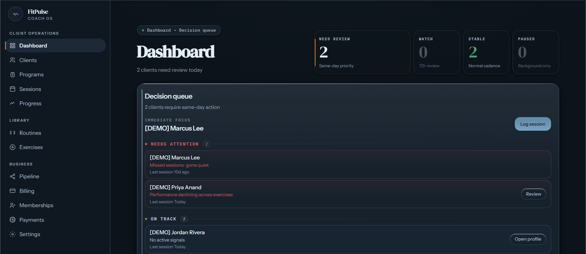
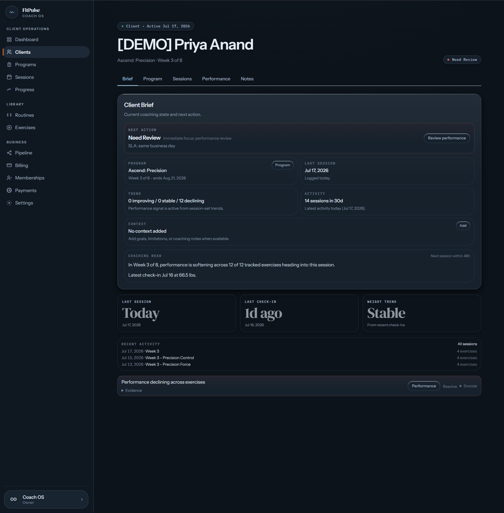
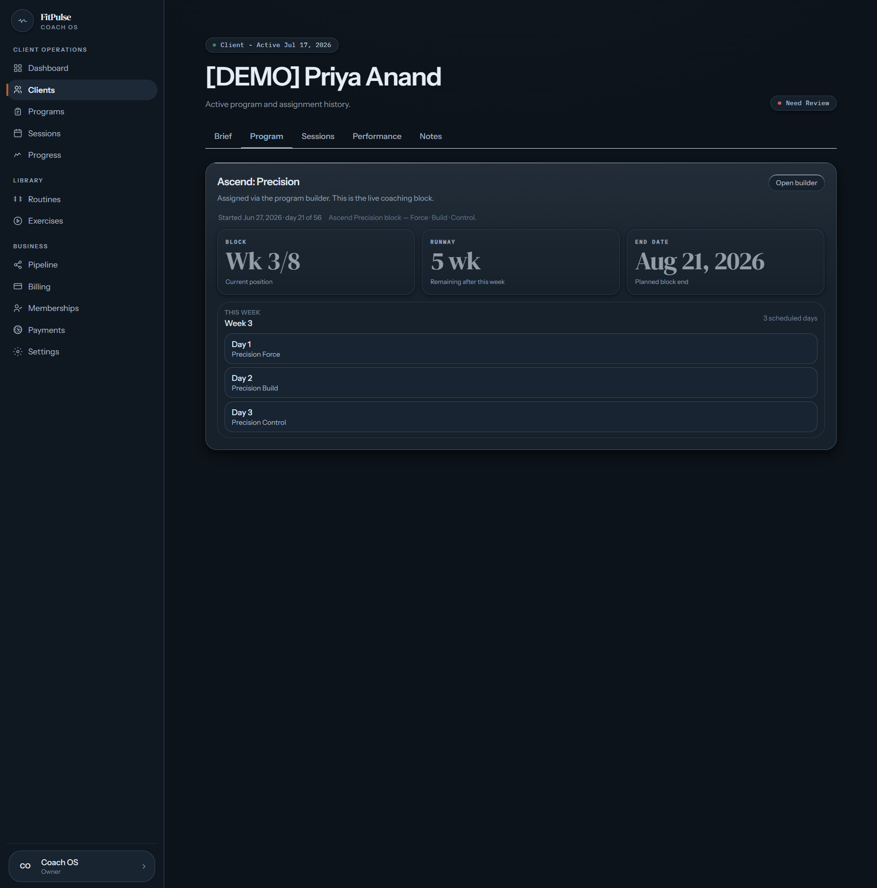
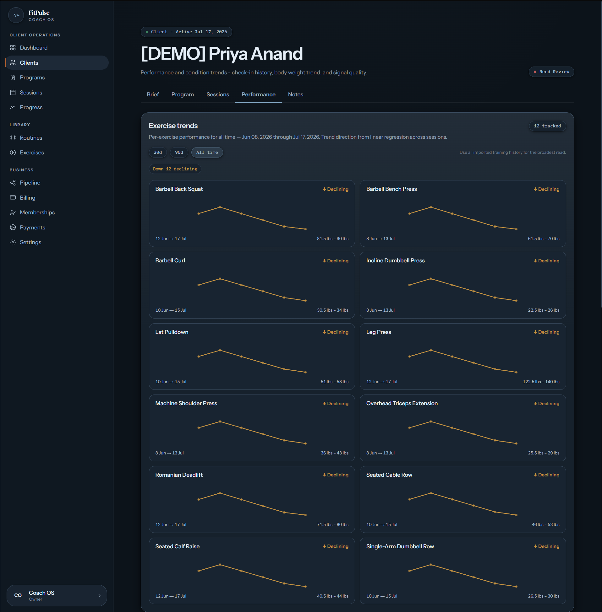

Decision-first, not dashboard-first
The interface prioritizes the client who needs attention and the reason a coaching decision is required.
Case study / FitPulse
FitPulse is a coaching operating system for trainers who need client context, programming, check-ins, and performance signals in one working surface.
Built for independent trainers and small coaching operations managing multiple clients, programs, check-ins, and performance decisions.
Coaching work often becomes fragmented across spreadsheets, messages, notes, program tools, check-ins, and disconnected dashboards.
Each surface can hold part of the truth while leaving the coach to reconstruct the full client context before deciding what to do next.
FitPulse brings those working contexts together without claiming to automate coaching judgment. It keeps relevant client, program, activity, and performance information close to the next action.




The interface prioritizes the client who needs attention and the reason a coaching decision is required.
Program status, recent activity, check-ins, and performance signals remain attached to the client record.
The coach can move between review and program adjustment inside the same operating system.
FitPulse supports the coaching decision; it does not pretend to replace the coach.
Current status
In active development
The core trainer workflow and major operating surfaces are implemented. FitPulse remains under refinement and validation.